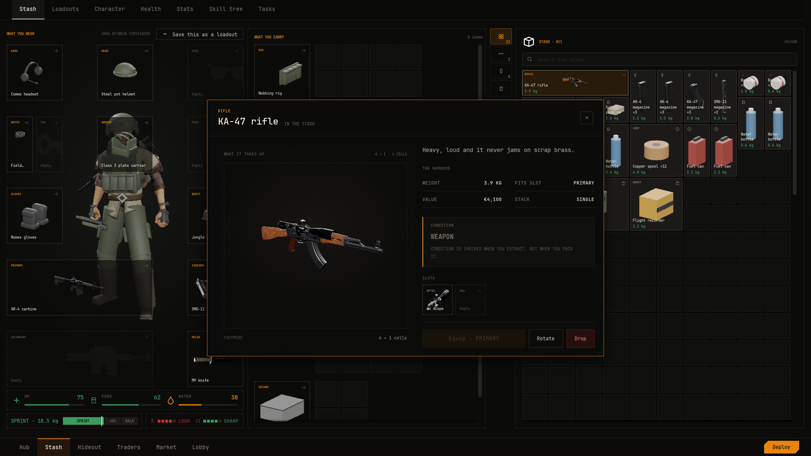

Inspect
The inspect window is an item's full sheet: a 3D view the player can turn and zoom, its description and numbers, its attachment slots and the actions it allows. Everything on it is read from the item's Item Definition, so there is nothing to set up beyond the item itself.

How it opens#
- Double-click an item tile, a filled doll slot or a worn container block. An item that opens a container opens that instead, and offers Inspect in its menu.
- Inspect in the item menu.
- From C++, with
OpenInspecton the screen that owns the item. It takes anFNVSViewItemSubjectbuilt the way a tile builds one.
The window can be moved and resized, nothing dims behind it, and inspecting the same item again brings its window to the front.
What the sheet shows#
- Tag, name and where
- The tile's word and the item's Display Name, then where it is: EQUIPPED with the slot, IN THE STASH, ON THE SHELF, IN THE WARDROBE, CREW KIT · READ ONLY or IN A CONTAINER.
- What it takes up
- The Footprint in cells.
- Description
- The item's Description.
- Weight
- The item's Weight, such as
3.4 KG. - Value
- The item's Value, in the setup's money format.
- Fits slot
- The slot from the type's Equip Slot, or NOT EQUIPPABLE.
- Stack
- The count, such as ×3, or SINGLE.
- Condition
- The type's word, such as WEAPON or AMMO, with a note that condition is checked on extraction.
- Slots
- A weapon's attachment slots, each empty or showing the part fitted in it. Hidden for items with none.
- Actions
- A main button, Rotate and Drop. The main button is Unequip for a worn item, Equip · SLOT for an item that can be worn (enabled when the slot is free), and Sell with the value for anything else worth something. Rotate is enabled for an item lying in a grid, and the window stays open to show the new footprint.
A teammate's gear and a wardrobe piece hide the actions and show a note that the sheet is view only.
Fitting parts from the sheet#
Drag an attachment onto one of the slots, or anywhere on the window, and it fits into the free slot of its kind. Drag a fitted part out of its slot onto a grid to take it off. See Weapons for attachment slots.
The picture#
The window uses the first of these that exists:
- The item's Icon When the definition sets Icon, that texture is shown.
- A live 3D view When the definition has a Look with a base, the item is built live in the window so the player can turn it. Fitted parts show on it.
- A rendered icon If the live view is not available, a captured picture of the look.
- The tag glyph The tile's outline glyph, tinted.
A worn item is looked up by the item in the slot, so inspecting a slot shows what is in it.
How it frames and turns the item#
The live view opens at the item's icon angle, so it looks the way its tile does. That angle is yaw -35 and pitch -20 unless the item's look overrides it. The camera fits the mesh's bounds.
- Drag turns the item, half a degree per pixel.
- Scroll zooms between 0.8 and 2.0.
- Showing a different item resets the turn and the zoom.
To change the starting angle for one item, open its Item Definition, expand Look > Framing, tick Override and set:
- Yaw, Pitch
- The angle in degrees. Yaw -90 shows the item side on.
- Zoom
- Above 1 fills more of the frame.
- Offset
- A shift as a fraction of the frame, so it works at every size.
The same framing is used for the item's tile pictures, so the tile and the window stay consistent.
Preview profiles#
How a 3D view behaves in one place is a Preview Profile data asset. The plugin ships four in Content/Render. Only the character screen animates its figure, and none of them swoops the camera.
- PP_Inspect
- The inspect window. Still pose, turn and zoom on, zoom up to 2.0, redraws only when the item changes.
- PP_Doll
- The paper doll's figure. Still pose, no turning, redraws live.
- PP_Character
- The character screen. Animated idle, turn on, redraws live.
- PP_Portrait
- Crew portraits. Still and fixed, redraws on change.
The fields you can change on a profile:
- Pose
- Animated Idle loops the look's Character Preview Animation. Static holds its first frame.
- Framing, Framing Zone
- Full Body, Upper Body, or Zone with a body zone such as head or chest.
- Rotate, Rotate Button, Degrees Per Pixel
- Whether dragging turns the subject, with which mouse button, and how fast.
- Ease Back To Front, Ease Back Speed
- After a drag, the subject turns back to face the camera.
- Zoom, Min Zoom, Max Zoom, Zoom Step
- Whether scrolling zooms, its range and its step.
- Focus
- Hovering a doll slot eases the camera to that slot's body zone.
- Gamepad Turn Axis, Gamepad Tilt Axis, Gamepad Degrees Per Second, Gamepad Dead Zone
- Turning with a stick.
- Redraw
- Live captures every frame while animating or dragged. On Change captures only when the look changes, so a still preview costs nothing per frame.
To change the inspect window's behaviour, duplicate PP_Inspect into your own folder, edit the copy, and set it as Profile on the ItemPreview widget in your own copy of W_InspectWindow. Plugin assets are replaced when you update the plugin.
Result#
Double-click a weapon in your stash. The inspect window opens with the weapon at its icon angle. Drag to turn it and scroll to zoom. The sheet shows your description, weight and value, and dropping a scope on the window fits it to the gun in front of you.